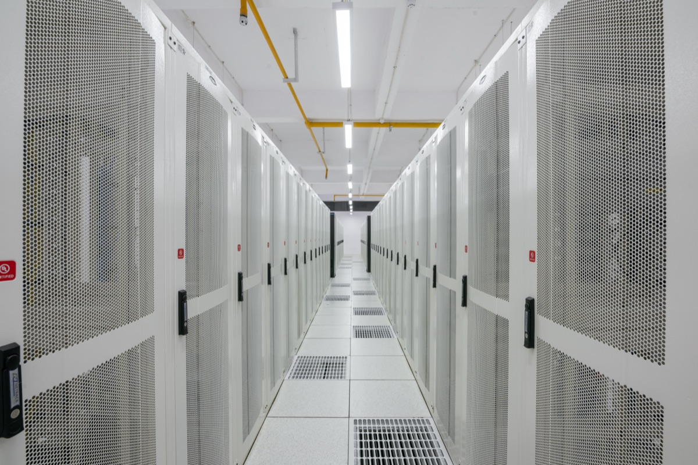

Executive Summary
This article reads the cloud agreement Anthropic and Akamai announced on September 24. The figure is $11.6 billion over seven years, and if Anthropic commits a further $9 billion the total reaches about $20.6 billion. No contract in Akamai's history has been larger, and this one runs more than six times the $1.8 billion deal the same two companies signed four months earlier. That the sum is a conditional commitment rather than booked revenue gets its own treatment further down. What settles the character of the agreement, though, is not the figure but a single word. Akamai wrote that the money supports Anthropic's CPU workload demands. That points away from the accelerators used to train models and toward the ordinary chips that run code and open web pages.
To gauge the scale, set the same buyer's other contracts alongside it. In April alone Anthropic committed to multiple gigawatts with Google and Broadcom and up to 5 gigawatts with Amazon, all of it accelerator capacity for training and serving Claude. The power figure Akamai gave investors covers every cloud deal it signed this year and lands at 95 to 105 megawatts. The dollars run to eleven figures while the power stays near a tenth of a gigawatt. Akamai did not say what Anthropic plans to do with the capacity, and that silence is the premise under every reading of this deal.
Sections 1 through 3 report what the filings, the investor call and the coverage say. Section 4 is the reading this article draws from them.
Key Figures
Source: Akamai press release (2026-09-24), the investor call held the same day, and TechCrunch.
$11.6B
Committed over seven years
A further $9 billion of commitments would bring the total to about $20.6 billion, on the largest contract Akamai has ever signed
95–105 MW
Power for Akamai's cloud contracts
The figure covers every deal signed this year, this one included. It is about a fiftieth of the 5 gigawatts Anthropic promised Amazon
2H 2027
When the revenue starts
Nothing lands in 2026. The contract passes through $150 million to $300 million in 2027 and reaches an annual pace near $1.7 billion by the end of 2028
About 5%
Ceiling on the warrant Anthropic holds
The exercise price is $111.33 a share. About 2% vests now, and roughly another 1% vests with each additional $3 billion committed
The Money Goes to Akamai, the Equity Goes to Anthropic
Akamai announced on September 24 that it had signed a seven-year, $11.6 billion cloud agreement with Anthropic. An investor call followed the same afternoon, and TechCrunch covered the deal the next day. Nothing in the company's history has been bigger, and should Anthropic commit another $9 billion within the term, the total rises to about $20.6 billion.
The two companies were not strangers. At its May earnings call Akamai disclosed a seven-year, $1.8 billion contract with an unnamed frontier model company, and Bloomberg identified the customer as Anthropic the following day. What was announced in September is two additional project plans under that earlier master services agreement, dated May 5, with signatures completed on September 18. In four months the same relationship grew more than sixfold.
The familiar shape of an AI infrastructure deal has the supplier investing in the AI company. Here the arrow points the other way. Akamai issued Anthropic a warrant, a right to buy non-voting convertible preferred stock that converts into 7.7 million common shares, or up to about 5% of shares outstanding, at an exercise price of $111.33 a share. Roughly 2% vests with this $11.6 billion commitment, and the remaining 3% vests about a percentage point at a time as Anthropic commits each further $3 billion. The party spending the money accumulates equity in the party receiving it.
The numbers on the receiving side arrive later. Akamai plans to spend about $5.5 billion over two years on the capacity the commitment requires. This year's revenue sees none of it. Revenue starts in the second half of 2027 at $150 million to $300 million for that year, and once the build reaches full ramp at the end of 2028 it settles at an annual pace near $1.7 billion. Ed McGowan, Akamai's chief financial officer, described the contract as paying out on delivery, which is why he expects the revenue to hold steady once the capacity is running. Akamai shares rose as much as 17% in after-hours trading, opened the next morning above $125, and closed that session at $113.94, a gain of 3.2%.
The $11.6 billion is not, however, money in the bank. The filing with the Securities and Exchange Commission conditions the commitment on Akamai meeting delivery and service availability requirements, and it gives Anthropic three grounds for termination: a material uncured breach, a change of control that hands Akamai to one of Anthropic's direct competitors, and notice of a material outage. McGowan added that the fair value of the warrant is deducted from revenue across the term and that the deduction already sits inside the $11.6 billion. Concentration came up as well. The $14.4 billion of multi-year commitments signed this year is this contract plus $2.8 billion from other enterprises, and JPMorgan, putting Anthropic's share at 93%, kept its rating at neutral.
All of that is the money. The sentence that sets the character of the deal sits elsewhere. Akamai's press release describes the agreement as supporting Anthropic's accelerating CPU workload demands at scale, and on the investor call McGowan put it more bluntly: this particular deal is all CPU. In the same session he noted that the $14.4 billion of cloud contracts signed this year holds a mix of CPU and GPU. This one was singled out.
The Same Buyer's Other Contracts Are Written in Gigawatts
Whether $11.6 billion counts as large depends on what you put next to it. Anthropic announced two compute agreements this spring. On April 6 it committed with Google and Broadcom to multiple gigawatts of next-generation TPU capacity arriving from 2027, and on April 20 it committed with Amazon to up to 5 gigawatts. The Amazon announcement also mentions that more than one million Trainium2 chips already train and serve Claude. Those contracts are measured in power and in chip counts.
Akamai's numbers use a different unit. McGowan told investors that the cloud contracts signed this year will together need roughly 95 to 105 megawatts of power. Fully ramped those contracts generate about $2.2 billion a year, which works out to roughly $22 million of annual revenue per megawatt. The Anthropic commitment is the largest piece inside that total, and even the whole of it sits near a tenth of a gigawatt.
The contrast should not be pushed too far. Megawatts are not dollars, and 95 to 105 megawatts is not Anthropic's share alone. Accelerators draw far more electricity in the same floor space, so a gap in power terms is what anyone would expect. McGowan made the point himself in that session: because this deal is CPU, the power efficiency is better, and CPUs pack more capacity into the same electricity, which generally yields more revenue per megawatt. The direction still shows. The contracts Anthropic signed to grow its models are counted in gigawatts, while this one spends $11.6 billion over seven years inside roughly a fiftieth of that power. Two purchases of the same kind of hardware rarely produce that ratio.
One clause about the hardware also stands out. McGowan said the contract carries no requirement to refresh or upgrade the equipment over its length. Seven years is not a short window. General-purpose chips keep doing their job across generations, whereas a training accelerator loses much of its value after a single generation slips past. From where the contract is read, that clause points the same direction as the phrase CPU workloads.
Anthropic has already said as much in its own words. In the April announcement with Google and Broadcom, the company explained why it runs on several hardware platforms at once: doing so means it can match workloads to the chips best suited for them. Hold that sentence against this contract and the reading narrows to one. What it is buying at Akamai is the work for which the best-suited chip is not an accelerator.
Nothing on an Agent's To-Do List Is Matrix Multiplication
Lay out what an agent does over a day and it looks like this. It opens a file. It runs a command. It waits for the output. It reads the result and decides what to do next. It opens a web page. When the format does not match, it fixes the input and tries again. Not one line of that list is matrix arithmetic.
Picking the next word is work an accelerator does well, because the same calculation has to run tens of thousands of times at once. The list above is made of branches and waiting instead. It checks a condition and forks, it waits on another system to answer, it handles short tasks in order. General-purpose chips take that kind of work. The sentence TechCrunch used to explain the deal says the same thing: demand for CPUs, the general-purpose chips that handle work like running code and browsing the web, has grown as AI agents take on more tasks.

Follow the link TechCrunch attached to that clause and an IEEE Spectrum article from August appears, where the same account comes from the people building the hardware. A research scientist at Intel calls many components of an agentic task inherently CPU-based jobs and lists them: parsing the output, working out which tool to invoke, making the API call or running the code, collecting the result, and feeding it back to the model. An AMD executive says that in the company's own testing, seven of the eight stages in realistic agentic pipelines run entirely on the CPU.
Researchers at Georgia Tech point to something more specific. When a server has too few CPU cores, dispatching work to the accelerators falls behind and the accelerators sit there stalled. Turning text into tokens is CPU work as well, and every tool call forces the tokenizer to process the whole accumulated sequence again. A conversation holding 100,000 tokens that receives a 1,000-token result has to be counted from the beginning, all 101,000 of them. An agent does this hundreds of times a day.
The pressure is already visible in the market. Earlier this year Amazon Web Services told its engineers to conserve CPU cycles at all costs, and Intel has sold out of server CPUs through at least the end of the year. That queue is the backdrop to Anthropic locking in seven years at once and Akamai pre-purchasing memory and other components.
Three cautions belong on this explanation before it turns into a conclusion.
- • The use was never disclosed. Akamai did not say what Anthropic will do with the capacity, and Anthropic has offered no explanation of its own. The link to agent demand comes from the industry backdrop, not from the contract.
- • These are not the first general-purpose chips Anthropic has bought. The Amazon agreement covers Graviton, Amazon's own general-purpose processor, alongside the Trainium line. What is new is not the purchase of general-purpose chips but the fact that they became the label on an $11.6 billion contract.
- • Accelerator demand has not fallen. Producing an answer is still accelerator work, and Anthropic's gigawatt-scale contracts were signed five months before this announcement. What this deal absorbs is the work that happens on either side of that computation.
The shape of what Akamai sells is worth a look too. The press release calls the capacity distributed AI infrastructure and software. Akamai grew up moving content closer to users to shorten the distance it travels, and its cloud business likewise resembles a scattering of sites rather than one enormous campus. On the investor call Tom Leighton, Akamai's chief executive, cited more than 4,000 points of presence across 700 cities in 130 countries, and McGowan said the roughly 100 megawatts will not be built in-house but assembled from several colocation providers in blocks of 10 to 30 megawatts per location.
The list of capabilities still to come is more direct. Leighton named agent sandboxing and security, an AI gateway and firewall, and intelligent orchestration, then gave the goal: each workload should run on the most cost-effective hardware with minimal startup time and low latency to users and data. Why Anthropic chose this supplier is still unsaid on both sides. What the seller intends to sell, though, is already on the record.
Why Pebblous Is Watching This Deal
From here the deal gets read again through a data lens.
Open the document where a company records its AI spending and there is usually one line on it. Model calls. A token price multiplied by an expected call volume, and that is the entry. For a company that trains nothing of its own, the arithmetic is not wrong. The trouble is that once agents are attached, tokens are no longer the only thing that grows.
Run an agent once and behind it a workspace spins up to take commands, files get opened, queries go out to internal systems, responses are waited on, and when a format does not match the same round happens again. Most of that elapsed time is not computation. It is waiting. Waiting on what? On the time it takes to reach the data. Anthropic buying its capacity in two kinds and a company writing its AI costs on two lines rest on the same distinction.

When there is no record of where the data sits, what format it is in, and who is allowed to open it, an agent repeats the same search from scratch every time. People remember after the first attempt; an agent holds no such memory unless somebody builds it one. And that repetition does not show up wearing the face of a quality problem. It arrives first as longer runtimes, more retries, and a bill for resources left running. Preparing data is a cost item before it is an accuracy item.
Earlier pieces from Pebblous gather in the same place. We worked through how search costs climb as a power law as data grows, and we looked separately at whether the compute AI consumes can be bought and sold the way electricity is. We also examined who absorbs the cost when a data center arrives later than promised. The three overlap at one point. AI costs do not grow only inside the model.
So three questions are enough to carry back to your own organization after reading this deal.
- • In this year's AI budget, does the cost of building a model sit on the same line as the cost of putting one to work?
- • Has anyone actually counted what a single agent run spends beyond the model call?
- • How many times over a few days does an agent go looking for the same data again? Whose job is it to bring that count down?
Thank you for reading this far. The documents behind this article can be read directly in the Akamai press release, the filing with the Securities and Exchange Commission, and the TechCrunch report. Open this year's AI budget at your own organization, check whether the two costs are tied to one line, and tell us what was missing.
References
Primary Documents
- 1.Akamai Technologies, Inc. (2026). "Akamai Announces $11.6 Billion Multi-year Agreement with Anthropic to Support Growing Demand." Akamai Newsroom, September 24, 2026.
- 2.Akamai Technologies, Inc. (2026). "Form 8-K, Exhibit 99.1." U.S. Securities and Exchange Commission EDGAR, September 24, 2026.
Industry Coverage
- 3.Mehta, A. (2026). "Anthropic to pay Akamai $11.6 billion over seven years in cloud deal." TechCrunch, September 25, 2026.
- 4.Smith, M. S. (2026). "The CPU Comeback Is Upon Us." IEEE Spectrum, August 16, 2026.